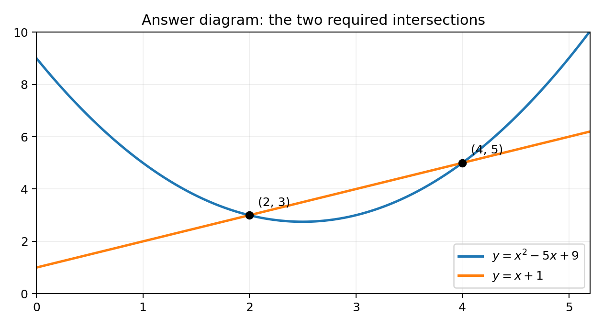

The graph $y=x^2+ax+b$ meets the straight line $y=x+1$ when $x=2$ and $x=4$.
What are the values of $a$ and $b$?
○ $a=-5,\ b=9$
○ $a=5,\ b=9$
○ $a=-5,\ b=11$
○ $a=5,\ b=11$
○ $a=-6,\ b=11$
○ $a=6,\ b=11$
○ $a=-6,\ b=13$
○ $a=6,\ b=13$
Multiple choice
At each meeting point the two $y$-values are equal:
$$x^2+ax+b=x+1.$$
Strategy. A curve and a line “meet” where their $y$-coordinates agree for the same $x$, so the governing idea is to set the two expressions equal. This converts a geometric intersection into a single algebraic equation whose roots are the meeting $x$-values $2$ and $4$.
Why this beats solving the quadratic blindly. Because the two intersection $x$-values are already given, we never need the quadratic formula; instead we substitute those known $x$-values to generate equations in the unknown coefficients $a$ and $b$. Under ESAT conditions with no calculator, this substitution route is far faster and less error-prone.
Intermediate logic. The equality $x^2+ax+b=x+1$ holds precisely at the intersection abscissae, so each given $x$ turns it into a numerical relation between $a$ and $b$; two points give two equations for two unknowns.
Presentation. Write the single equating line first, then substitute each $x$ underneath it. Transfer cue: whenever a curve meets a line at named $x$-values, equate the functions and feed in those $x$-values rather than expanding into a general quadratic and comparing coefficients.
ESAT tempo. With roughly ninety seconds per multiple-choice item and no calculator, the substitution plan is chosen precisely because it replaces slow general expansion with two quick numeric substitutions that a strong mental arithmetic base can finish inside the time budget.
Use $x=2$:
$$2^2+2a+b=2+1$$
$$4+2a+b=3$$
$$2a+b=-1.\tag{1}$$
Why $x=2$ first. Substituting the smaller root keeps the arithmetic small — squares of $2$ are easy to do mentally, which matters in a no-calculator ESAT setting where speed on clean numbers protects accuracy.
Intermediate logic. With $x=2$: the left side is $4+2a+b$ and the right side is $2+1=3$, so $4+2a+b=3$ rearranges to $2a+b=-1$. The constant $4$ moves across to combine with $3$, leaving a tidy linear relation labelled (1) for later elimination.
Definition in play. This is one equation of a $2\times2$ linear system; labelling it (1) signals that a second, parallel equation is coming and that we intend to eliminate one unknown between them.
Mental-arithmetic note. $2^2=4$ and $2+1=3$ are the only computations; do them in your head and commit the result $2a+b=-1$ to the page. Transfer cue: in coefficient-recovery problems, substitute the numerically simplest known point first to build the cleaner of the two simultaneous equations.
Labelling discipline. Tagging this relation as equation (1) is not decoration: in a timed no-calculator paper it lets you refer back and eliminate without rewriting, saving precious seconds. Keep $a$ before $b$ in the same order you will use for the partner equation, so the later subtraction lines up column by column.
Mental drill. The only figures here — $2^2=4$ and $2+1=3$ — should be automatic; rehearsing such small squares and sums is exactly the differentiator the ESAT rewards.
Use $x=4$:
$$4^2+4a+b=4+1$$
$$16+4a+b=5$$
$$4a+b=-11.\tag{2}$$
Building the second equation. The second given intersection $x=4$ generates the companion relation, and having two independent linear equations is exactly what pins down two unknowns $a$ and $b$.
Intermediate logic. With $x=4$: $4^2=16$, so the left side is $16+4a+b$; the right side is $4+1=5$. Thus $16+4a+b=5$, and moving the $16$ across gives $4a+b=-11$, labelled (2). Note the right side is the sum $4+1$, not the product $4\times1$ — a classic misread the diagnosis below flags.
Why keep the same form. Both equations now read “$(\text{coeff})a+b=(\text{number})$”, so the $b$-terms match and can be eliminated by subtraction; deliberately writing them in identical layout makes that elimination one clean step.
Mental-arithmetic note. Compute $16-5=11$ mentally to reach $4a+b=-11$. Transfer cue: align each simultaneous equation in the same variable order so the shared term cancels cleanly, and always re-read printed operation signs before trusting a substitution.
Guard against the classic trap. The right-hand value is the sum $4+1=5$, never the product $4\times1=4$; misreading the printed plus sign as multiplication would corrupt equation (2) and steer you to a wrong option. Recompute $16-5=11$ mentally to lock in the constant.
Subtract (1) from (2):
$$2a=-10\Rightarrow a=-5.$$
Back-substitute:
$$2(-5)+b=-1\Rightarrow b=9.$$

Elimination strategy. Subtracting equation (1) from (2) removes $b$ instantly because both carry a single $+b$; this is the quickest finish and avoids fraction-heavy substitution.
Intermediate logic. $(4a+b)-(2a+b)=-11-(-1)$ gives $2a=-10$, so $a=-5$. Back-substituting into (1), $2(-5)+b=-1$ gives $-10+b=-1$, hence $b=9$. Each step is a one-line mental calculation, matching the eight-way multiple-choice list where the correct pair is $a=-5,\ b=9$.
Definition in play. Solving the system means finding the unique $(a,b)$ satisfying both intersection conditions simultaneously; the check confirms both printed points lie on curve and line.
Presentation. Show the subtraction, the value of $a$, then the back-substitution for $b$; in the exam, match the pair against the option list rather than re-deriving. Transfer cue: when two simultaneous equations share an identical single term, subtract to eliminate it immediately, then back-substitute for the partner unknown.
Answer-matching efficiency. Under exam pressure, once $a=-5$ emerges you can scan the option list and eliminate every choice without $a=-5$ before even finding $b$; this cross-referencing is a legitimate multiple-choice speed technique that the eight-option layout invites.